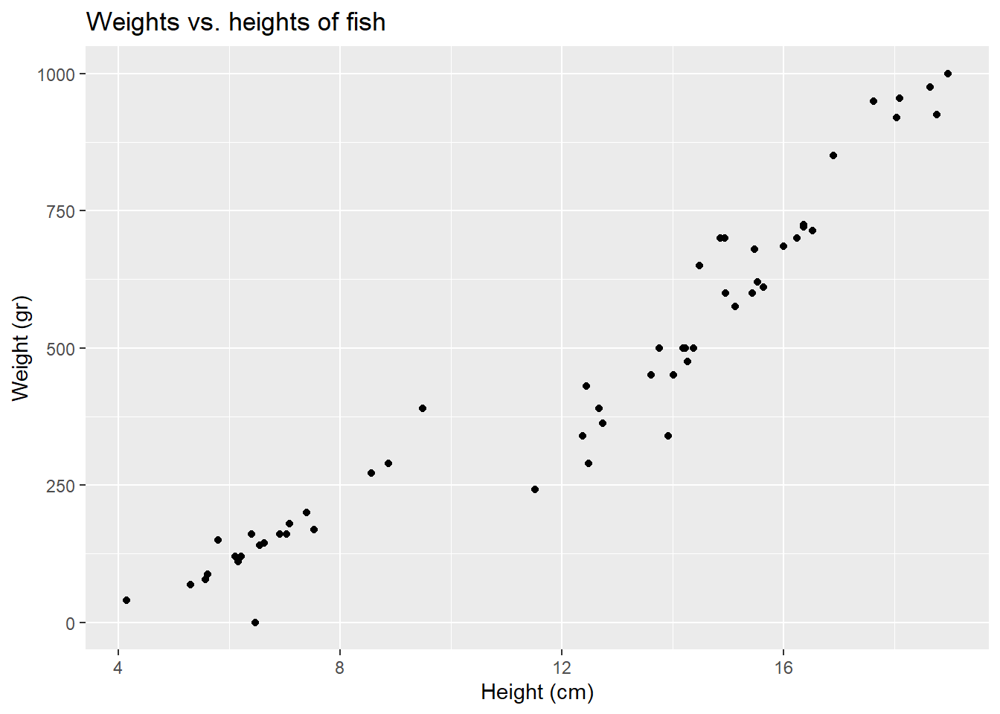
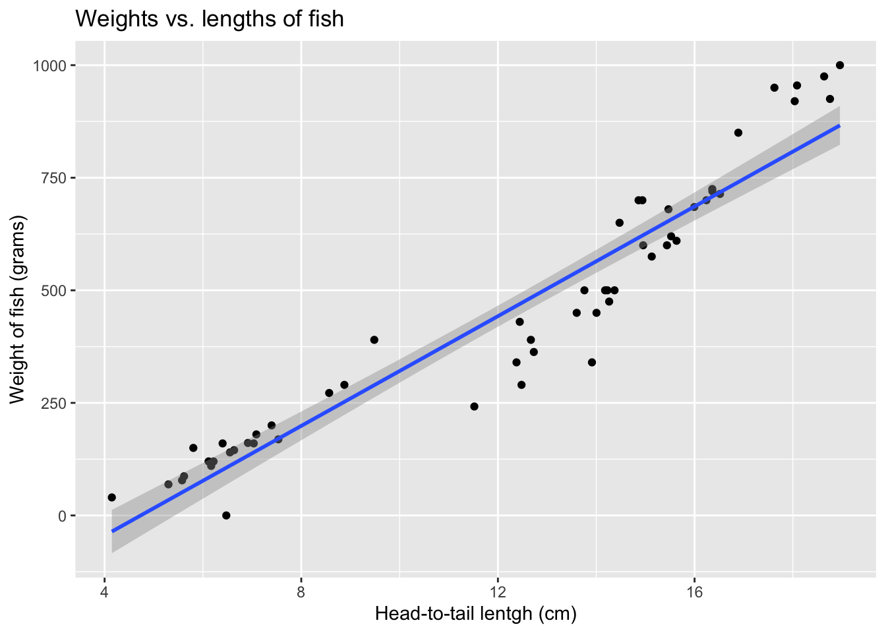
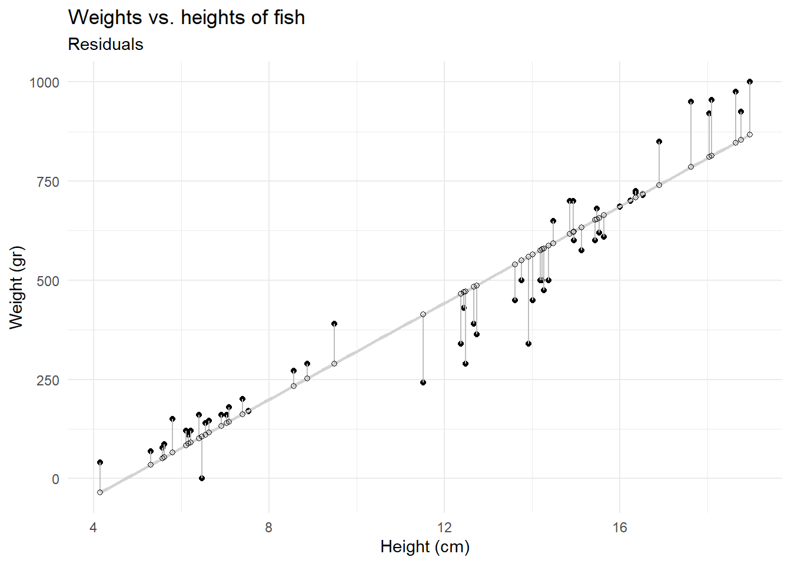
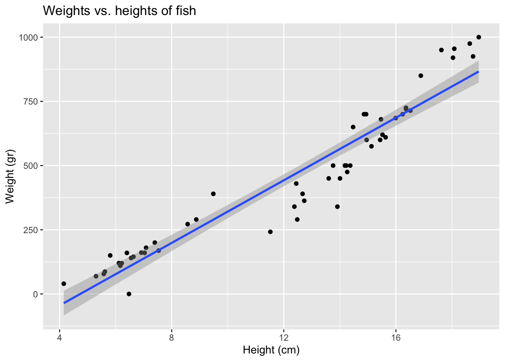

library(tidyverse)
library(tidymodels)
fish <- read_csv("data/fish.csv")Modelling fish
Suggested answers
Application exercise
Answers
For this application exercise, we will work with data on fish. The dataset we will use, called fish, is on two common fish species in fish market sales.
The data dictionary is below:
| variable | description |
|---|---|
species |
Species name of fish |
weight |
Weight, in grams |
length_vertical |
Vertical length, in cm |
length_diagonal |
Diagonal length, in cm |
length_cross |
Cross length, in cm |
height |
Height, in cm |
width |
Diagonal width, in cm |
Visualizing the model
We’re going to investigate the relationship between the weights and heights of fish.
- Demo: Create an appropriate plot to investigate this relationship. Add appropriate labels to the plot.
ggplot(fish, aes(x = height, y = weight)) +
geom_point() +
labs(
title = "Weights vs. heights of fish",
x = "Height (cm)",
y = "Weight (gr)"
)
- Your turn (5 minutes):
If you were to draw a a straight line to best represent the relationship between the heights and weights of fish, where would it go? Why?
Start from the bottom and go up Identify the first and last point and draw a line through most the others.
Now, let R draw the line for you. Refer to the documentation at https://ggplot2.tidyverse.org/reference/geom_smooth.html. Specifically, refer to the
methodsection.
ggplot(fish, aes(x = height, y = weight)) + geom_point() + geom_smooth(method = "lm") + labs( title = "Weights vs. lengths of fish", x = "Head-to-tail lentgh (cm)", y = "Weight of fish (grams)" )`geom_smooth()` using formula 'y ~ x'
What types of questions can this plot help answer?
Is there a relationship between fish heights and weights of fish?
- Your turn (3 minutes):
We can use this line to make predictions. Predict what you think the weight of a fish would be with a height of 10 cm, 15 cm, and 20 cm. Which prediction is considered extrapolation?
At 10 cm, we estimate a weight of 375 grams. At 15 cm, we estimate a weight of 600 grams At 20 cm, we estimate a weight of 975 grams. 20 cm would be considered extrapolation.
What is a residual?
Difference between predicted and observed.
Model fitting
- Demo: Fit a model to predict fish weights from their heights.
fish_hw_fit <- linear_reg() |>
fit(weight ~ height, data = fish)
fish_hw_fitparsnip model object
Call:
stats::lm(formula = weight ~ height, data = data)
Coefficients:
(Intercept) height
-288.42 60.92 - Your turn (3 minutes): Predict what the weight of a fish would be with a height of 10 cm, 15 cm, and 20 cm using this model.
x <- c(10, 15, 20)
-288 + 60.92 * x[1] 321.2 625.8 930.4- Demo: Calculate predicted weights for all fish in the data and visualize the residuals under this model.
fish_hw_aug <- augment(fish_hw_fit$fit)
ggplot(fish_hw_aug, aes(x = height, y = weight)) +
geom_point() +
geom_smooth(method = "lm", se = FALSE, color = "lightgrey") +
geom_segment(aes(xend = height, yend = .fitted), color = "gray") +
geom_point(aes(y = .fitted), shape = "circle open") +
theme_minimal() +
labs(
title = "Weights vs. heights of fish",
subtitle = "Residuals",
x = "Height (cm)",
y = "Weight (gr)"
)`geom_smooth()` using formula 'y ~ x'
Model summary
- Demo: Display the model summary including estimates for the slope and intercept along with measurements of uncertainty around them. Show how you can extract these values from the model output.
fish_hw_tidy <- tidy(fish_hw_fit)
# intercept
fish_hw_tidy |>
filter(term == "(Intercept)") |>
pull(estimate)[1] -288.4152# slope
fish_hw_tidy |>
filter(term == "height") |>
pull(estimate)[1] 60.91587- Demo: Write out your model using mathematical notation.
\(\widehat{weight} = 1.96 + 0.233 \times height\)
Correlation
We can also assess correlation between two quantitative variables.
- Your turn (5 minutes):
What is correlation? What are values correlation can take?
Strength and direction of a linear relationship. It’s bounded by -1 and 1.
Are you good at guessing correlation? Give it a try! https://www.rossmanchance.com/applets/2021/guesscorrelation/GuessCorrelation.html
- Demo: What is the correlation between heights and weights of fish?
fish |>
summarize(r = cor(height, weight))# A tibble: 1 × 1
r
<dbl>
1 0.954Adding a third variable
- Demo: Does the relationship between heights and weights of fish change if we take into consideration species? Plot two separate straight lines for the Bream and Roach species.
ggplot(fish,
aes(x = height, y = weight, color = species)) +
geom_point() +
geom_smooth(method = "lm") +
labs(
title = "Weights vs. heights of fish",
x = "Height (cm)",
y = "Weight (gr)"
)`geom_smooth()` using formula 'y ~ x'
Fitting other models
- Demo: We can fit more models than just a straight line. Change the following code below to read
method = "loess". What is different from the plot created before?
ggplot(fish,
aes(x = height, y = weight)) +
geom_point() +
geom_smooth(method = "lm") +
labs(
title = "Weights vs. heights of fish",
x = "Height (cm)",
y = "Weight (gr)"
)`geom_smooth()` using formula 'y ~ x'